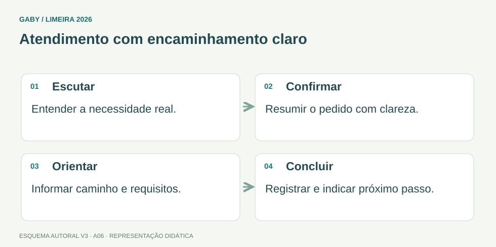

Objetivos do módulo
- Aplicar princípios de atendimento claro, respeitoso e objetivo.
- Registrar recados e demandas com precisão.
- Encaminhar corretamente sem abandonar o usuário.
Atendimento com encaminhamento claro

Descrição em texto do esquema
- Escutar: Entender a necessidade real.
- Confirmar: Resumir o pedido com clareza.
- Orientar: Informar caminho e requisitos.
- Concluir: Registrar e indicar próximo passo.
Oficina visual · aplique o esquema
Um usuário está irritado com um atraso. Escreva uma resposta que acolha a demanda sem prometer um prazo que você não conhece.
Atividade autoral complementar da V3. Registre sua resposta; a resolução está no arquivo de gabarito e revisão.
Mapa do conteúdo
1. Atendimento é processo
Atender bem não significa apenas ser cordial. Envolve compreender a demanda, confirmar entendimento, fornecer informação correta, registrar quando necessário e encaminhar ao setor competente. Qualidade combina precisão, respeito e resolutividade.
2. Comunicação interpessoal
Escuta ativa exige atenção, perguntas de esclarecimento e confirmação. Linguagem deve ser compreensível ao público, evitando jargão desnecessário. Tom profissional não significa frieza.
3. Recepção e triagem
Triagem identifica natureza, urgência, documentos necessários e destino. O atendente não deve inventar resposta fora de sua competência; é melhor confirmar fonte ou encaminhar de forma responsável.
4. Registro de recados
Um recado útil contém quem procurou, para quem, assunto essencial, contato, data/hora e quem registrou, conforme rotina. Dados pessoais devem ser tratados com discrição.
5. Encaminhamento
Encaminhar é direcionar ao setor/pessoa competente, oferecendo contexto suficiente para evitar repetição desnecessária. Quando possível, informe prazo/canal e próximos passos.
6. Situações difíceis
Em conflito, mantenha foco no problema, não personalize a discussão, não prometa o que não pode cumprir e respeite limites de segurança. Comunicação assertiva combina firmeza, respeito e clareza.
Exemplos resolvidos passo a passo
Exemplo 1
Situação: Usuário irritado reclama de atraso.
Exemplo 2
Situação: Você não sabe responder regra específica.
Exemplo 3
Situação: Recado “João ligou, retornar” é suficiente?
Pegadinhas e erros frequentes
- Prometer solução fora da competência.
- Usar jargão que o cidadão não entende.
- Registrar recado sem dados mínimos.
- Responder de forma defensiva ao usuário irritado.
Resumo de prova
- Atendimento = compreender, informar, registrar e encaminhar.
- Escuta ativa reduz erros.
- Não invente informação.
- Recado precisa ser rastreável.
- Assertividade é firmeza com respeito.
Exercícios do módulo
Resolva sem consultar o arquivo de gabarito. As questões são autorais e construídas para treinar os conceitos do edital.
- interromper rapidamente
- responder antes de ouvir
- usar jargão
- atenção e confirmação do entendimento
Fontes: Brasil — Lei 13.460/2017, direitos do usuário de serviços públicos · Presidência da República — Manual de Redação, 3ª edição.
- culpar outro setor
- encerrar atendimento
- consultar fonte/encaminhar
- inventar resposta
Fontes: Brasil — Lei 13.460/2017, direitos do usuário de serviços públicos · Presidência da República — Manual de Redação, 3ª edição.
- nenhum registro
- dados essenciais e contato
- somente nome
- somente horário
Fontes: Brasil — Lei 13.460/2017, direitos do usuário de serviços públicos · Presidência da República — Manual de Redação, 3ª edição.
- clara, firme e respeitosa
- agressiva
- passiva sempre
- vaga
Fontes: Brasil — Lei 13.460/2017, direitos do usuário de serviços públicos · Presidência da República — Manual de Redação, 3ª edição.
- ser ampliado
- substituir toda explicação
- ser obrigatório
- ser evitado ou explicado
Fontes: Brasil — Lei 13.460/2017, direitos do usuário de serviços públicos · Presidência da República — Manual de Redação, 3ª edição.
- arquivar tudo
- calcular estoque
- identificar demanda e destino
- eliminar usuário
Fontes: Brasil — Lei 13.460/2017, direitos do usuário de serviços públicos · Presidência da República — Manual de Redação, 3ª edição.
- prometer qualquer coisa
- focar no problema e próximos passos
- personalizar
- elevar tom
Fontes: Brasil — Lei 13.460/2017, direitos do usuário de serviços públicos · Presidência da República — Manual de Redação, 3ª edição.
- dar contexto e destino correto
- ser aleatório
- transferir sem explicar
- eliminar registro
Fontes: Brasil — Lei 13.460/2017, direitos do usuário de serviços públicos · Presidência da República — Manual de Redação, 3ª edição.
- apenas rapidez
- apenas simpatia
- ignorar procedimento
- resolutividade com precisão e respeito
Fontes: Brasil — Lei 13.460/2017, direitos do usuário de serviços públicos · Presidência da República — Manual de Redação, 3ª edição.
- compartilhamento irrestrito
- nenhum cuidado
- discrição e necessidade
- exposição pública
Fontes: Brasil — Lei 13.460/2017, direitos do usuário de serviços públicos · Presidência da República — Manual de Redação, 3ª edição.
Quando terminar, abra Assistente Administrativo 06 - Atendimento ao Público e Comunicação - Gabarito e Revisão.
Checklist de domínio
- ☐ Aplicar princípios de atendimento claro, respeitoso e objetivo.
- ☐ Registrar recados e demandas com precisão.
- ☐ Encaminhar corretamente sem abandonar o usuário.
Meta do módulo: 80% ou mais nas questões, sem depender de consulta.
Referências e conteúdos auxiliares
- Brasil — Lei 13.460/2017, direitos do usuário de serviços públicosParticipação, proteção e defesa dos direitos do usuário dos serviços públicos.
- Presidência da República — Manual de Redação, 3ª ediçãoClareza, redação oficial, concordância, regência e pontuação. Referência de apoio; modelos locais podem ter regras próprias.
Referências externas de apoio consultadas para a V3 em 27/09/2026. A origem das questões é o material autoral do projeto; estes links não indicam que uma instituição publicou ou validou os exercícios. As páginas externas precisam de internet. Em informática, confira a versão do programa; em legislação, observe o recorte e as regras de atualização do edital.